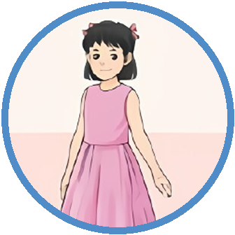
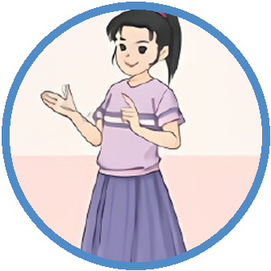
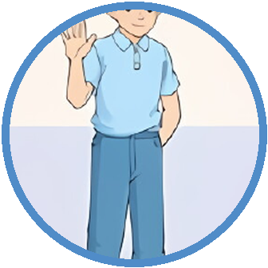

Guoguo01
Hi, Lingling. Did you travel this summer vacation?
嗨，玲玲。这个暑假你出去旅行了吗？
意群：Hi, Lingling / Did you travel / this summer vacation
最低目标：听懂 3 句、跟读 3 句、回答 1 个问题。完成即可，不加量。
当前速度：1×（默认）
本版声音：Samantha 美式女声；1×为自然清晰源音，0.75×跟读由同一女声保真降速。未经家长同意不得更换声音。
本次纠正：凡叙述已经发生的暑假经历，read 的实际标准音已锁定为 /red/；表示现在或习惯时才读 /riːd/。语法页连续示范两遍 /red/，再播放降速的过去时例句。
开口时间：每段内部0.75倍示范后固定留90秒让孩子自己读；提前读完可点“快进15秒”。1倍完整视频约29分13秒。
问答翻译已严格一一对应：问题区只显示英文问题和中文问题；答案卡只显示英文答案和它的中文答案，不再重复上方问题。
完成页已全文朗读：“完成啦”、“今天学会了什么？”、中间全部学习总结和底部鼓励语均有对应语音；How、Where、What 由清晰美语女声朗读。
自然拼读已重做：字母名称 O—停顿—O 与字母组合 oo 在单词里的声音分开讲；foot、book、good、look 的 /ʊ/ 用完整美语单词各示范两遍，school /skuːl/、blood /blʌd/ 另页作为例外词。
倍速说明：上方七个按钮控制本互动页播放，默认 1 倍。单独 MP4 不能内嵌这些网页按钮；微信分享区另备七个固定速度文件。若孩子必须在微信里打开后再调速，应发送已发布的家庭 H5 学习链接，不能只发送普通 MP4。
MP4 使用 H.264 + AAC，可直接发到微信，在手机、Pad、电脑和常见投屏设备播放。互动页请保持整个文件夹不拆散。
按表达形式和教学目标分流：拼音/中文原名用普通话；完整英语官方名称与教材明确教授的英语表达用清晰美语。不能只因机构位于中国就把英语名称改读成中文。
每条音频依次是：标准英语 → 中文意思 → 0.75倍速英语跟读 → 90秒孩子自己读。0.75倍速跟读和练习时间已经做进视频内部；孩子提前读完可点上方“快进15秒”。

GuoguoHi, Lingling. Did you travel this summer vacation?
嗨，玲玲。这个暑假你出去旅行了吗？
意群：Hi, Lingling / Did you travel / this summer vacation

LinglingNo, I didn’t. I stayed in Beijing. I went to the National Library of China on foot and read books there.
没有，我没去。我留在北京。我步行去了中国国家图书馆，并在那里看了书。
意群：No, I didn’t / stayed in Beijing / went to the National Library of China / on foot / read books there
That’s good. Did you also stay in Beijing, Maomao?
那很好。毛毛，你也留在北京了吗？
意群：That’s good / Did you also stay / in Beijing, Maomao

MaomaoYes, I did. I worked as a volunteer at China Science and Technology Museum.
是的。我在中国科学技术馆做志愿者。
意群：Yes, I did / worked as a volunteer / at China Science and Technology Museum
Wonderful! When did you work there?
太棒了！你什么时候在那里工作的？
意群：Wonderful / When did you work there
From August 1st to 10th.
从八月一日到十日。
意群：From August 1st / to 10th
Is the museum far from your home? How did you get there?
博物馆离你家远吗？你是怎么去的？
意群：Is the museum far from your home / How did you get there
Not too far. I went there by bus. Where did you go, Guoguo?
不太远。我乘公共汽车去的。果果，你去了哪里？
意群：Not too far / went there by bus / Where did you go, Guoguo
I went to Hubei to see my grandparents. I learned to take care of plants and animals.
我去了湖北看望祖父母。我学会了照顾植物和动物。
意群：went to Hubei / to see my grandparents / learned to take care of / plants and animals
Hubei is far from here. How did you get there?
湖北离这里很远。你是怎么去的？
意群：Hubei is far from here / How did you get there
I took a train.
我乘了火车。
意群：took a train
Wow! All of us had a meaningful summer vacation.
哇！我们所有人都度过了一个有意义的暑假。
意群：All of us / had a meaningful / summer vacation
现在采用零账号、零付费方案：页面提供经审核的标准美语示范，但不自动判分、不假装能识别错音。孩子先听0.75倍标准句，再完整读一遍；家人每次只提醒下方一个关键点，重听示范后让孩子再读一次即可。可选的本机临时录音只用于当场回放，不上传、不保存，关闭页面即失效。
All of us had a meaningful summer vacation.
家人只听这一个点：MEAN 要重读，后两部分轻一些；不要把 meaningful 含混成一团。
为什么：重音符号在第一个音节前，所以先把 MEAN 读清楚，再轻读后两部分。
不想录音可直接跟读；录音功能不可用时也不影响学习。
先播放标准音，孩子完整读一遍；家人只提醒上面一个点，再听、再读一次。
I worked as a volunteer.
家人只听这一个点：worked 词尾清楚收在 /t/；不要多读成一个“伊德”音节。
为什么：work 末尾是清辅音 /k/，规则过去式 -ed 在这里读 /t/，整个词仍是一个音节。
不想录音可直接跟读；录音功能不可用时也不影响学习。
先播放标准音，孩子完整读一遍；家人只提醒上面一个点，再听、再读一次。
I read books there.
家人只听这一个点：本句讲已经发生的暑假经历，所以 read 要读 /red/，不是 /riːd/。
为什么：拼写相同，要靠时间和句意判断：过去时读 /red/；现在或习惯动作读 /riːd/。
不想录音可直接跟读；录音功能不可用时也不影响学习。
先播放标准音，孩子完整读一遍；家人只提醒上面一个点，再听、再读一次。
他或她这个暑假去了哪里？
他或她在那里做了什么？
他或她是怎么到那里的？
从听辨、线索补全、中文提取英语，到独立复述；每一步都先开口，再核对。
Who stayed in Beijing?
谁留在北京？先说人物名。
Maomao worked as a volunteer at ...
根据句首线索补完整地点。
How did Guoguo get to Hubei?
果果怎么去湖北？不用看课文，用完整英语回答。
Retell one summer vacation story: where, what, and how.
任选一个人物，不看课文，说出去了哪里、做了什么、怎么去。
采用提取练习与间隔练习原则；具体间隔按学习材料和保持时长调整，不把艾宾浩斯曲线误写成人人相同的固定分钟表。
每课只精学5项：听读音、懂中文、学搭配、放进句子里使用。教材原词与教学补充已经分开标注。
形容词 · 有意义的
形容一件事有价值、值得做，可放在名词前。
介词短语 · 步行
表示步行时说 on foot，不说 by foot。
专有名词 · 中国国家图书馆
机构全名作为一个整体使用，前面通常加 the。
专有名词 · 中国科学技术馆
机构全名作为一个整体使用；在馆内做志愿者可说 work as a volunteer at ...。
形容词短语 · 离……远
far from 后面接地点；问距离可用 Is ... far from ...?。
Did + 主语 + 动词原形 ...? 肯定回答 Yes, ... did；否定回答 No, ... didn’t。
特殊疑问词 + did + 主语 + 动词原形，用来问地点、事情和交通方式。
stay→stayed、work→worked；go→went、take→took。read 的现在式与过去式拼写相同：说现在或习惯时读 /riːd/，说已经发生的过去时读 /red/。本句讲暑假里已经发生的事，所以读 /red/。
原形和过去式由同一个清晰美语女声分开朗读；原形后停顿0.9秒，下一组前停顿1.25秒。
老师先把字母名称逐个说清楚，再用完整美语单词示范目标音。每个示范词读两遍，中间停0.95秒，随后给孩子自己读；原始音标字符不交给普通语音引擎硬读。
字母组合：oo 本组常见声音：/ʊ/
在 foot、book、good、look 这一组词里，oo 表示短元音 /ʊ/；请听 book 中间的元音。字母名称不是单词里的这个元音。
字母组合：ar 本组常见声音：/ɑr/
在 far、car、park、start 这一组词里，ar 表示 /ɑr/；请听 far 中间的元音。字母名称与词中声音分开听。
能说出一个关键词就算成功。下一课开始前再快速提取一次，不要求今天全部背完。